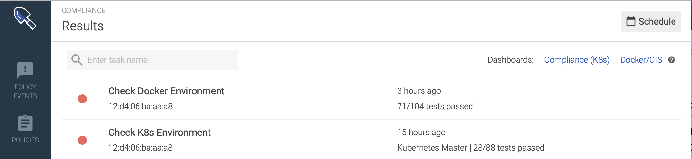
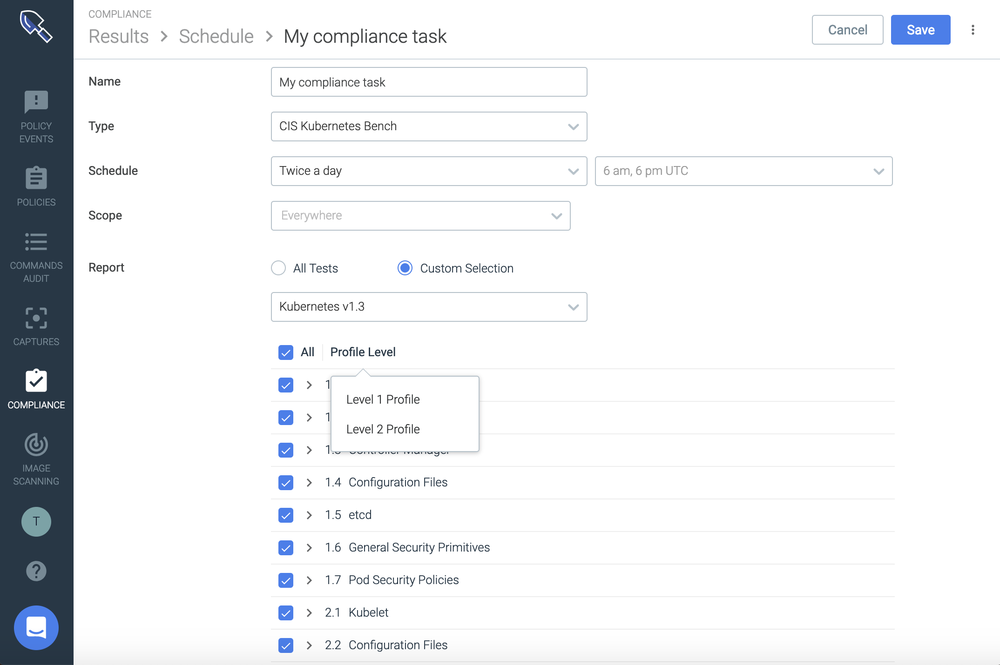

**Configure Compliance Tasks**
Use a Compliance Task to define:
the type of benchmark test to be run
the scope of the environment to be checked
the scheduled test frequency
the format in which you want to view the results report.
Once a task has been set up, it will run tests automatically on the scheduled timeline. You can also trigger the task manually (see Trigger a Manual Benchmark Test (Run Now)).
Contents
Trigger a Manual Benchmark Test (Run Now)
Schedule an Automated Benchmark Test
Create a Task
From the
Compliancemodule, select theScheduleicon. The
Schedule list(of existing tasks) is displayed.
Click +
Add Taskand define the task parameters on theNew Taskpage:
Name:Create a meaningful name.Type:SelectCIS Docker BenchorCIS Kubernetes Bench.Schedule:Choose a frequency and time to run the test.Scope:ChooseEverywhere, or narrow the scope as needed. (See also Grouping, Scoping, and Segmenting Metrics.)Report: Select how you want to view the test results in the report.
All Tests:means that no filter will be applied to the Report.Sysdig will automatically apply the correct version of the benchmark test for your environment, based on the version of Kubernetes or Docker where the agent is installed.
Custom Selection:means that you will Filter Report Results
Click
Save.
Filter Report Results
Note that the full compliance test will be run, even when the Report view is filtered. See Understanding Report Filters for more information.
From the
Compliancemodule, select theScheduleicon and either select or create aTask.The
Taskconfiguration page is displayed. For Report, choose
Custom Selection.Choose the appropriate
CISbenchmark versionfrom the drop-down menu (based on theTypechosen).See About Benchmark Versions for details.
Filter results as desired.
Optional: Choose a
Profile Level(1 or 2).See About Profile Levels for details.
Optional: Select/deselect individual controls as desired.
Optional: Select
Allto clear previous selections and begin again.
Click
Save.
Edit a Scheduled Task
From the
Compliancemodule, select theScheduleicon.The list of scheduled tasks is displayed.
Select a task from the list and edit.
Note
Changing the Report filter settings for a task that has already been run will retroactively filter the existing report views.
Click
Save.
Delete a Scheduled Task
From the
Compliancemodule, select theScheduleicon.On the relevant task, click the
More Options(three dots) icon.
Select
Delete taskand clickYesto confirm (orNoto revert the change).
Trigger a Manual Benchmark Test (Run Now)
Rather than wait for the next scheduled time for a compliance benchmark test to run, users can choose to run a benchmark test manually.
From the
Compliancemodule, select theScheduleicon.On the relevant task, click the
Run Now(arrow) icon.
A notification will state that the test was successfully run.
Return to the
Resultstab and refresh the page after several minutes to see the results..